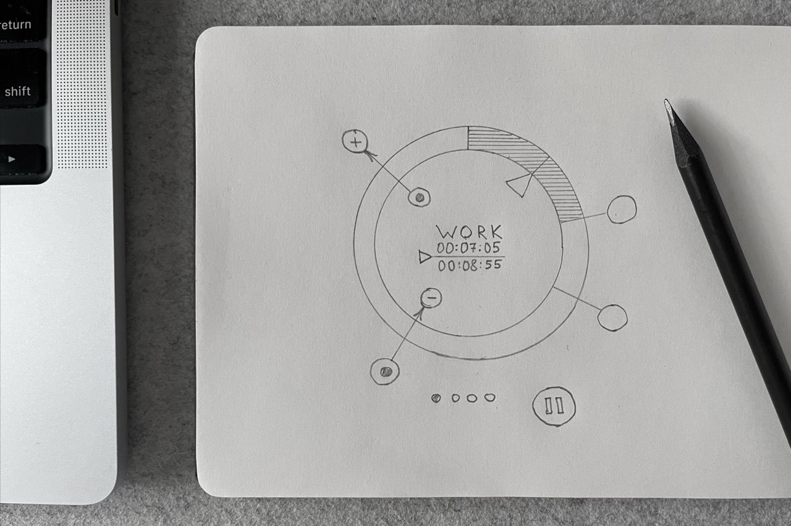
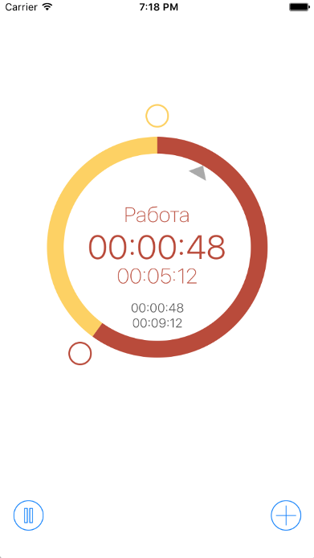
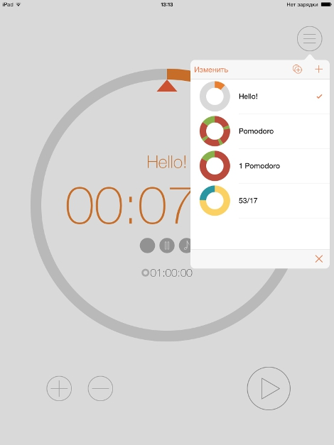
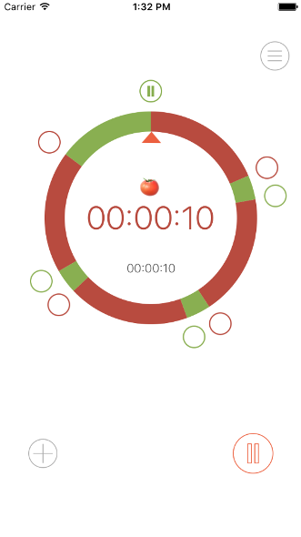
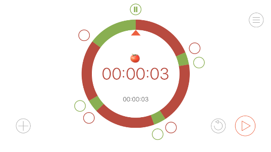
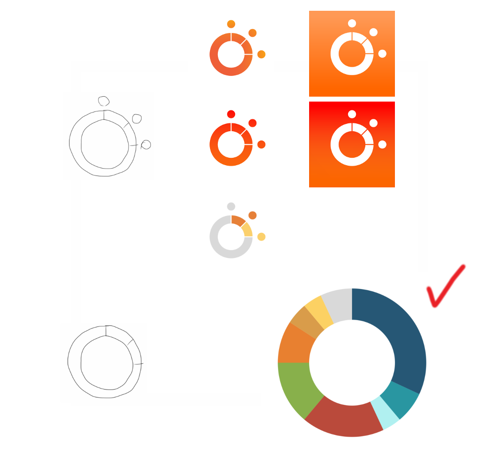

Design Story
Ring Timer
Making a handsome timer to fight procrastination
01 / The Origin
From the excellent online course “Learning How to Learn”, I got that focusing on a process rather than a product helps prevent procrastination. The easiest way to put this into practice is Pomodoro Technique.
This technique was developed in the late 1980s by Francesco Cirillo, who found that alternating intervals of focused work with short breaks can significantly improve productivity. He used 25 minutes for work and 5 minutes for rest. He called each work interval a pomodoro because he used a mechanical timer shaped like a tomato (pomodoro in Italian).
It’s easy to get started and avoid distractions when you know that a piece of work is limited in time and that you can rest once the time is up.
Moreover, regular breaks can bring sudden flashes of insight because your brain is no longer overfocused.
02 / The Concept
I started using the standard iOS timer.
It was quite good. But that timer can run only one interval in time. I quickly got tired of resetting different time intervals back and forth.
Looking at the iOS timer, I wondered: what if I could divide a circle of time into segments with just a swipe of my finger? Like in Fruit Ninja!
I sketched the idea, and it looked promising: I could add intervals by moving my finger outward from the timer ring and remove them by dragging the markers inward.

03 / Prototyping
I built a prototype.
I added familiar ‘+’ and ‘−’ buttons, along with an illustrative animation to support the new way of handling time segments.

I showed people a prototype and got some feedback:
- “I can’t figure out the current time. The arrow is too small.”
- “It’s great that I can see all the segments at the same time.”
- “Too many numbers on the screen.”
- “It’s not clear that I can add interval with a finger.”
- “It’s cool and handy to add segments with a finger.”
Based on this feedback: I made the timer hand bigger and brighter. I added tiny visual helpers showing you can move segment's markers in and out of the ring. I increased the font size. I allowed users to change colours and toggle the sound for individual segment. The interval ending sound was selected to be audible but not disturbing to colleagues.
04 / Dynamic Grid
It came out that it is hard to set interval length precisely, especially on a small iPhone screen.
Obvious decision — snap to grid. But which step of grid to choose?
The idea was a dynamic grid: faster movement — larger step, slower movement — smaller step for precise positioning.
I made a little app to try it out.
Dynamic grid did not work well in practice. I figured out that humans act more accurately in a consistent environment than when an application tries to help and changes the grid.
I decided to stay with a fixed grid. But for a large lap, the step would be a minute; for a small lap — a second.
04 / Fine Tuning
I also wanted to save timer presets for later use, so I added that feature.

Then I moved buttons for a better user experience.
I adjusted visual elements to work solid across different device sizes and orientations.


05 / Release
I created an application icon.

And finally, I published the app on the App Store.